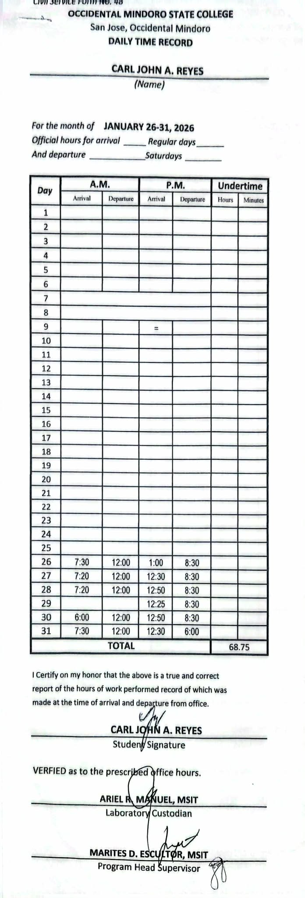
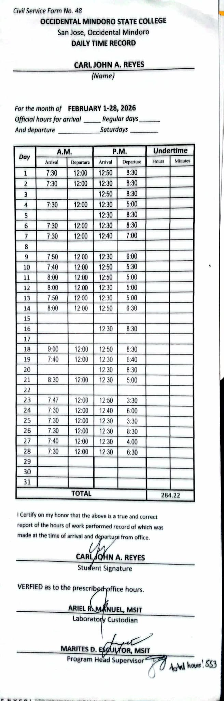
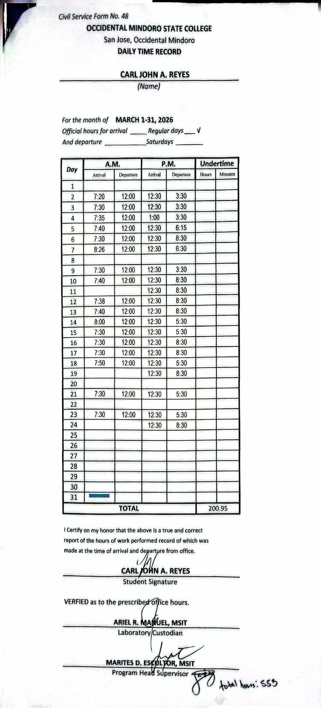

Chapter III: Work Experience
Documentation of tasks, reports, and training experiences during OJT.
A. Weekly Accomplishment Report
Maintaining cleanliness in laboratory
Problem Met: None
Solution: -
Remark: Accomplished
Assembly / Disassembly of Computer
Problem Met: None
Solution: -
Remark: Accomplished
Formatting Unit
Problem Met: None
Solution: -
Remark: Accomplished
Installing Applications
Problem Met: None
Solution: -
Remark: Accomplished
Assisting Students in Laboratory
Problem Met: None
Solution: -
Remark: Accomplished
Attendance Monitoring (Laboratory Time)
Problem Met: None
Solution: -
Remark: Accomplished
NC2 Training Assistance
Problem Met: None
Solution: -
Remark: Accomplished
System Troubleshooting
Problem Met: No Display
Solution: Changed unit cable
Remark: Accomplished
Network Cable Inspection
Problem Met: Loose connection
Solution: Checking / adjustment
Remark: Accomplished
Software Installation
Problem Met: License issue
Solution: Reactivated license
Remark: Accomplished
Equipment Setup Assistance
Problem Met: None
Solution: -
Remark: Accomplished
B. Daily Time Record
January

February

March

C. Internship Progress Report
Name: Carl John Reyes
Course: Bachelor of Science in Information Technology
Agency: OMSC-BSIT Department Laboratory
Period Covered: January 26, 2026 to March 26, 2026
Total Hours: 554
Laboratory: Laboratory 3, Technical Laboratory, and Laboratory 2
D. Internship Objectives & Status
| Objectives | Work Status | Problems Met |
|---|---|---|
| Maintain cleanliness of Laboratory | Accomplished | Parts of the PC has dust |
| Monitoring PC status | Accomplished | Some PC has slow response |
| Assisting Teachers | Accomplished | Troubleshooting internet |
| Installing new Applications | Accomplished | None |
| Formatting Computer | Accomplished | Corrupted PC |
| Fixing technical problems | Accomplished | — |
| Upgrading applications | Accomplished | — |
| Maintaining cleanliness of Computer | Accomplished | — |
| Enhancing skills | Accomplished | — |
| Following Laboratory Custodian and JO Advice | Accomplished | — |
E. Internship Analysis Report
1. Setting
The setting was good because: The laboratory was well-organized, and the computers were properly arranged, making it easy to work efficiently.
The setting was limited by: Access to the laboratory was restricted. Individuals needed prior permission from the laboratory coordinator or teacher.
My initial analysis of the organization was: The organization appeared professional, excellent, and provided a comfortable working environment.
2. Site Supervisor
Greatest contribution: The supervisor motivated us to improve our skills and personal development.
Supervision level: Effective and well-managed.
Needed improvement: More interpersonal and managerial guidance.
3. Environment Conditions or Events
Key influence: Maintaining discipline and following rules.
Trend/issue: New interns faced challenges due to unfamiliarity with technologies.
Diversity: Improved communication and adaptability.
4. Self-Assessment
Most important learning: Value of hard work, responsibility, and dedication.
Contribution: Assisted IT-related tasks and shared knowledge.